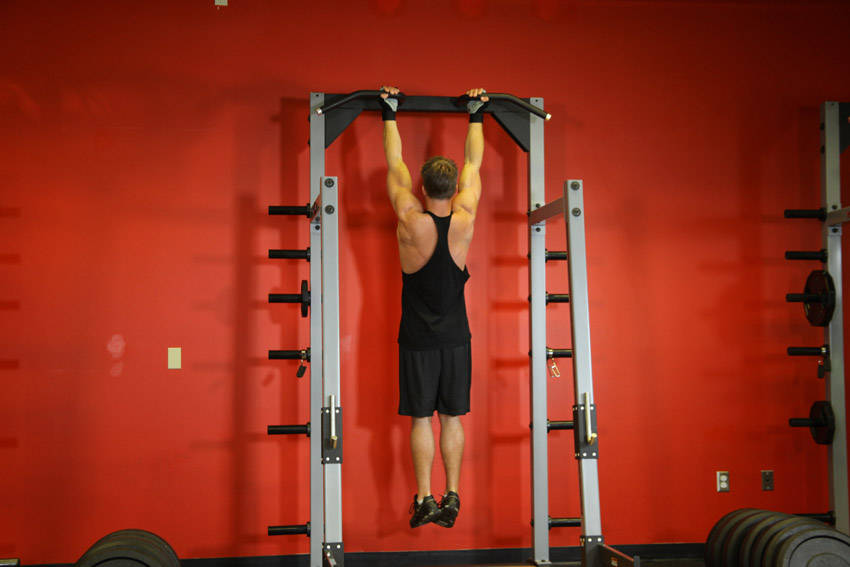
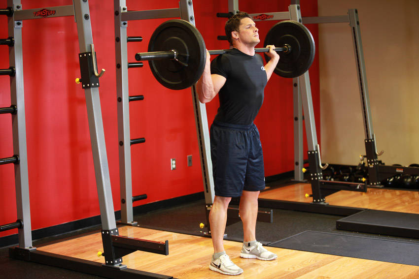

1 · Gyakorlatok — katalógus kártya
A variáns: a bélyegkép a rang-plakett helyére kerül, a rang a névsor elé költözik #1-ként.

#1Chin-UpB variáns: a bélyegkép a rang-plakett mellé kerül — mindkét jel megmarad.
Kép nélküli sor (a 37-ből) — izomszínű csempe a kezdőbetűvel, hogy a lista bal éle egyenes maradjon:
Az A-t javaslom: a rang és a kép ugyanazt a bal sávot akarja, és a rang egy #1-ként a név előtt semmit nem veszít — a B-ben a név 44 px-szel beljebb kezdődik minden soron.
2 · Gyakorlatválasztó (meso-építés)
A variáns: bélyegkép a sor elején, a STIM-mérő marad.


Itt éri a legtöbbet a kép: építés közben 20+ soron scrollozol, és a névnél gyorsabban ismered fel a mozgást. A STIM-mérő elfér mellette.
3 · Edzés előtti briefing (prep)
Bélyegkép a név elé — ugyanaz a 44 px-es tempó, mint a katalógusban.

A prep az egyetlen hely, ahol edzés ELŐTT, nyugodtan végignézed a napot — itt a kép emlékeztető, nem zaj.
4 · Edzés közben (aktív szett)
Itt nincs alapból kép. A meglévő ▶ Demo chip mellé kerül egy ⛶ Kép chip; koppintásra nyílik, ugyanúgy, ahogy a videó.

Szett közben a képernyő a naplózásé. A kép egy koppintásra van, de nem lop helyet attól, aki tudja, mit csinál.